Fender Rear - Right Side
Print
Operation Code: 10.01.28-02
Removal
- Remove rear bumper. Refer to procedure.
- Open door.
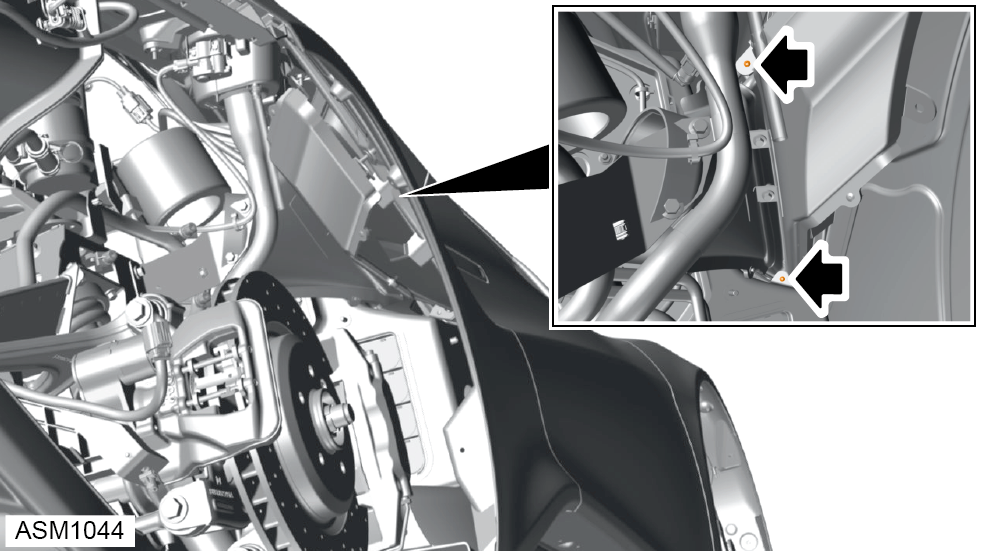
- Remove 4x8 self tapping screws (x2) securing side vent grill to rear fender.
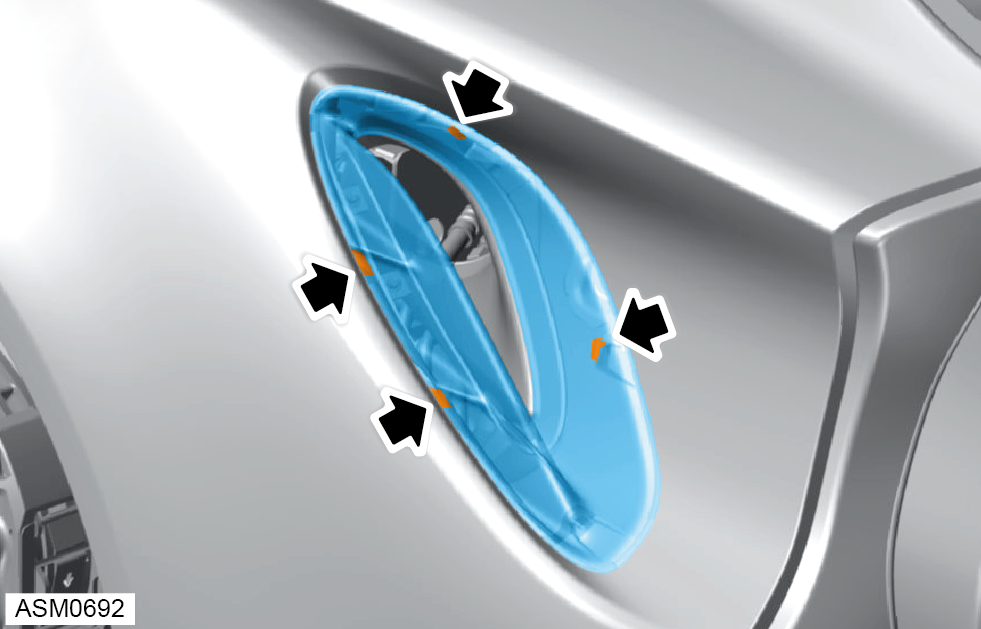
- Disengage clips (x4) and remove side vent grille from rear fender.
- Remove emblem secured to rear fender. Refer to procedure.
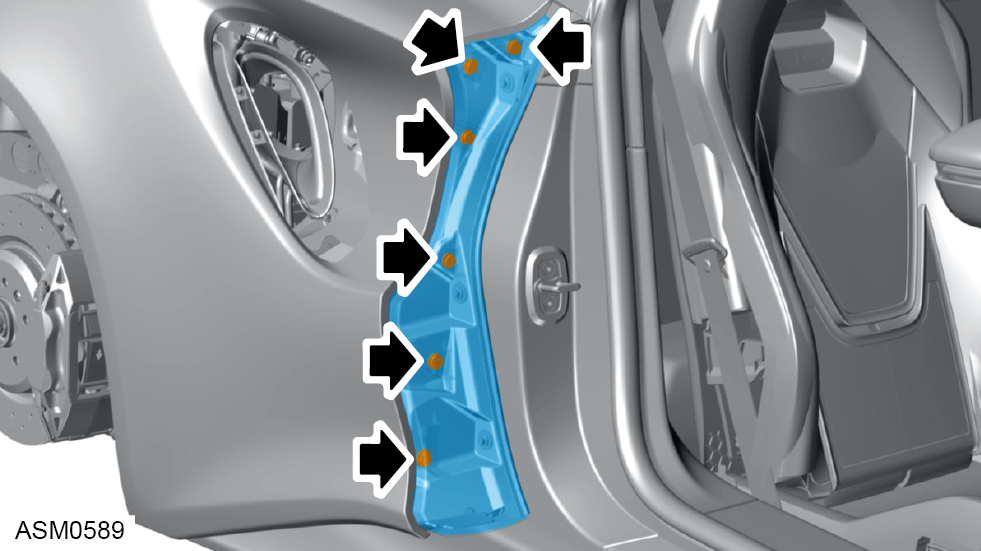
- Disengage trim clips (x6) and remove fender panel secured to rear fender.
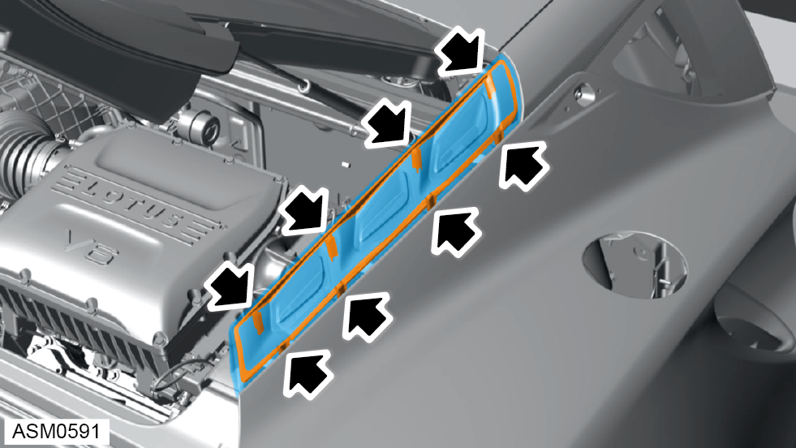
- Disengage trim clips (x8) and remove air outlet trim secured to rear fender.
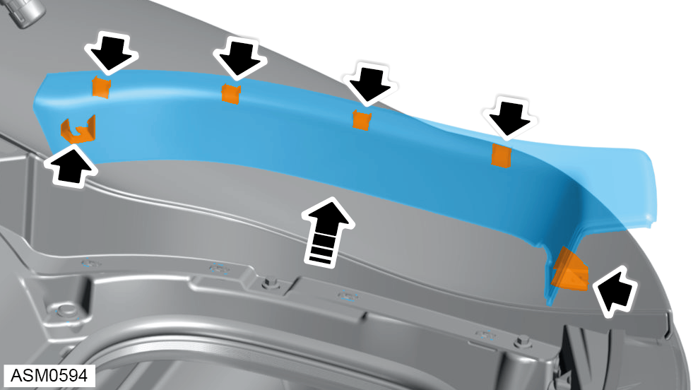
- Disengage trim clips (x6) and remove luggage side cover secured to vehicle.
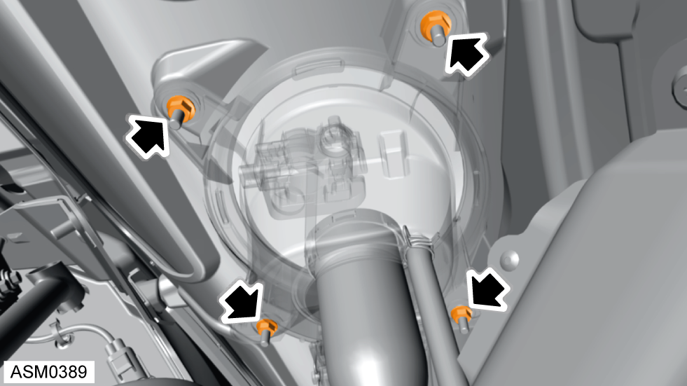
- Remove M6 nuts (x4) securing fuel filler bowl to rear fender. Torque 6 Nm.
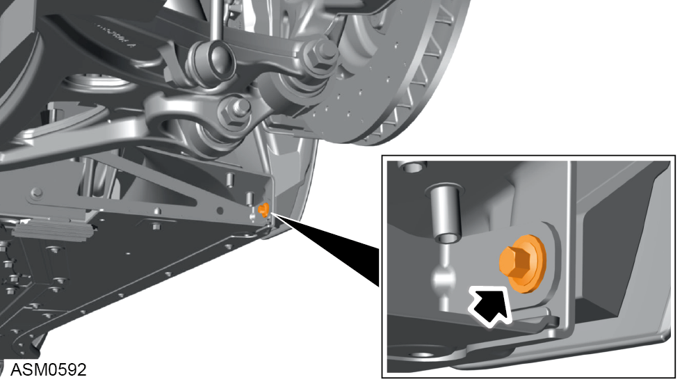
- Remove M6x20 bolt securing rear fender to chassis. Torque 10 Nm.
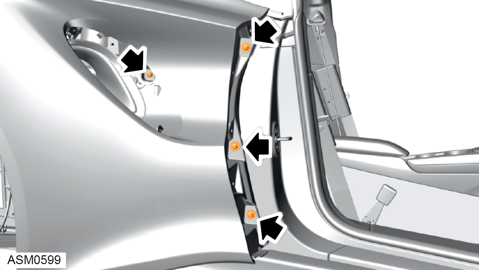
- Remove M6x20 bolts (x4) securing rear fender to body side panel. Torque 10 Nm.
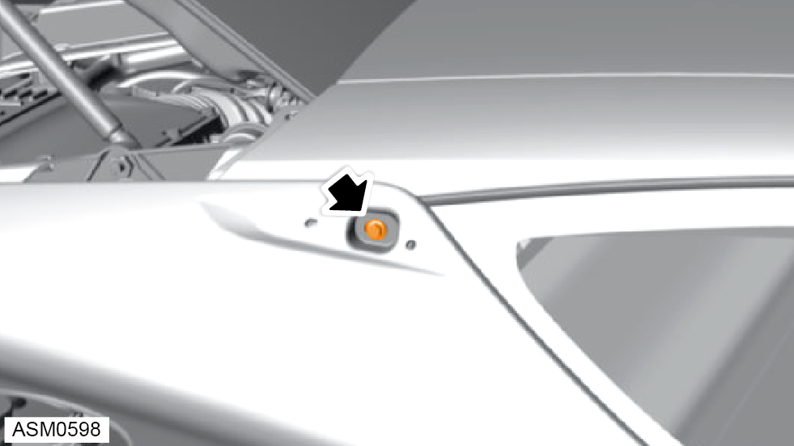
- Remove M6x20 bolt securing rear fender to body side panel. Torque 10 Nm.
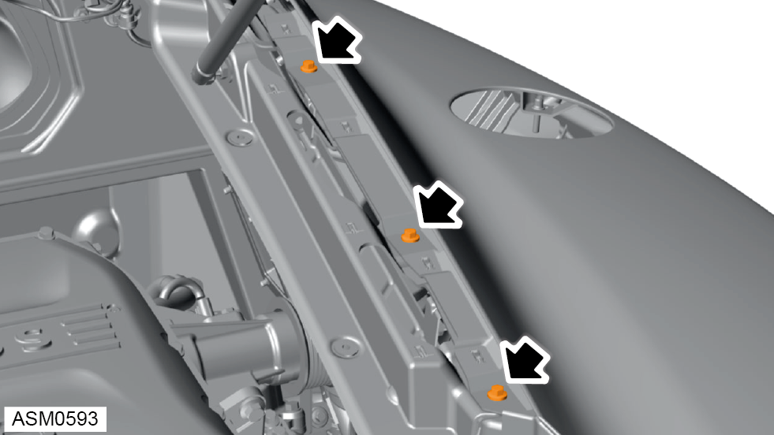
- Remove M6x20 bolts (x3) securing fender to C pillar panel. Torque 10 Nm.
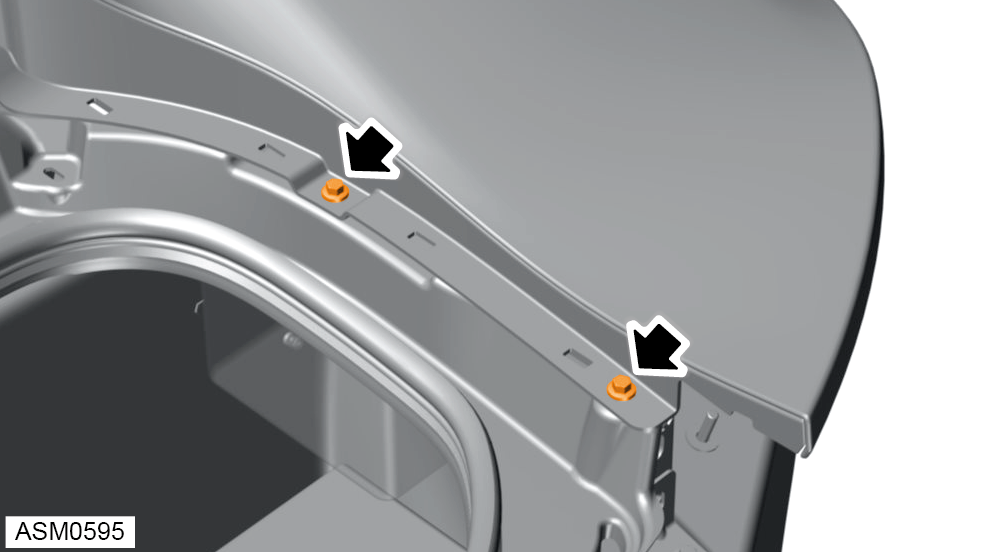
- Remove M6x20 bolts (x2) securing fender to boot box. Torque 10 Nm.
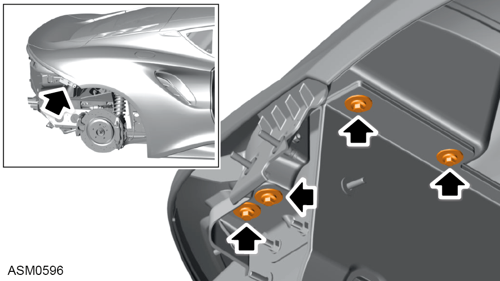
- Remove M6x20 bolts (x4) securing fender to boot box bracket and front boot box panel. Torque 10 Nm.
- Disconnect harness connector from rear lamp assembly.
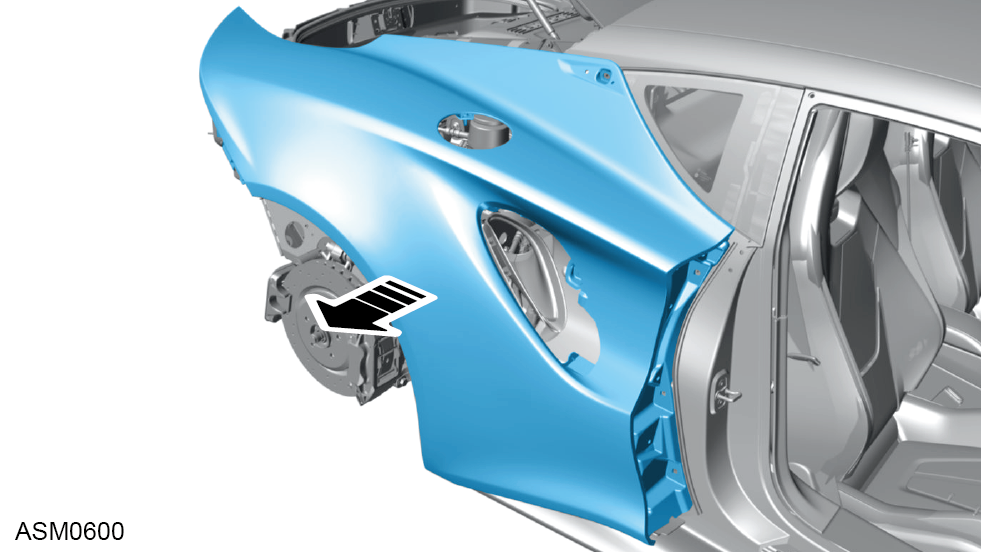
- Using assistance release and remove rear fender.
 CAUTION: Place on secure and suitable surface to prevent damage.
CAUTION: Place on secure and suitable surface to prevent damage.
Do not carry out further disassembly if removing for access only.
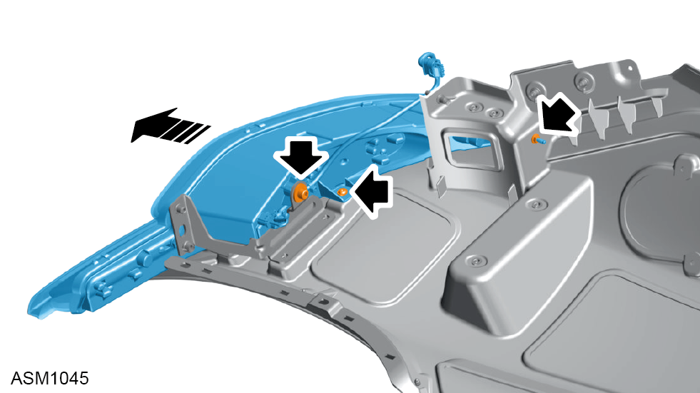
- Remove M8x16 bolt and washer securing rear lamp assembly to rear fender. Torque 10 Nm.
- Remove M6x12 bolt securing rear lamp assembly to rear fender. Torque 6 Nm.
- Remove M5 nut securing rear lamp assembly to rear fender. Torque 4 Nm.
- Remove rear lamp assmebly.
Installation
- Installation is the reverse of removal procedure except for the following:
- Clean off excess adhesive from fender emblem area and renew adhesive.
- Check fender gap and flush tolerances - see Alignment Specifications for Body Panels and Closures section.